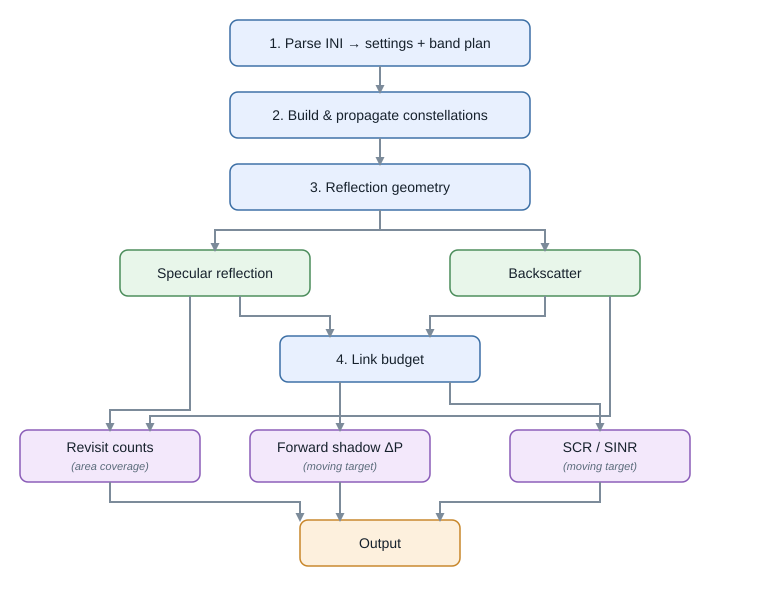

Running the simulator¶
The simulator has two entry points, one per analysis mode. Both read an INI file and must be launched from the repository root (the constants resolve all data and output paths from the working directory).
# from the repository root
python SRC/main_simulation_areaCoverage.py # reads Configuration_area.ini
python SRC/main_simulation_movingTarget.py # reads Configuration_ship.ini
Area coverage¶
SRC/main_simulation_areaCoverage.py allows to evaluate how often a region is covered by reflections. It reads
Configuration_area.ini, builds the receiver and GNSS constellations, and runs
Coverage over a region predefined by a shapefile (path provided in Configuration_area.ini). Outputs are per-constellation
track-visit maps in OUTPUT/.
Moving-target detection¶
SRC/main_simulation_movingTarget.py allows to evaluate when a moving target (e.g. a ship) could be detected by a reflection, and how likely it is to be detected (link budget).
It reads Configuration_ship.ini, builds a Ship trajectory,
propagates the constellations, and runs Moving-target detection in
either specular or backscatter mode. Outputs are per-band detection plots (and an optional
animation) in OUTPUT/.
Processing pipeline overview¶


Fig. 1: The processing flow. The core is shared; the two reflection modes share the link budget but produce different detection metrics, and area coverage counts contiguous track visits from the selected reflection geometry (the specular point, or the near-backscatter swath around the backscatter reflection point), using the link budget only as a validity gate.¶
Both modes share the same core. The processing flow is:
parse the INI (INI configuration reference) into settings and a validated band plan;
build the LEO receiver constellation and the GNSS transmitter constellations (Satellites, constellations and orbits) and propagate them;
solve the reflection geometry per (transmitter, receiver) pair (Specular reflection or Backscatter point / BRP);
evaluate the link budget (Link budget) using the ocean and ship RCS models (Ocean target, Targets: base class and ship);
accumulate coverage counts or detection events and write the plots.
Note
The first launch in a fresh session can pause for several seconds while astropy (pulled in by
pymap3d) imports cold and the antivirus scans the scientific libraries; the second run is fast. Use
Run Without Debugging in the IDE, or pre-warm the import once, if the debugger surfaces an interrupt
during that import.
Caution
ECI/ECEF conversion depends on Earth-orientation data from astropy-iers-data. Offline execution is
allowed to use the installed table even when its predictive portion is stale, which favors
reproducibility over a hard failure. Update astropy-iers-data (or provide current IERS data) before
precision geolocation studies, especially for future dates.
Utility scripts¶
SRC/ also carries a few standalone developer utilities that are not part of either analysis mode and
are not covered by the module pages:
sanity_check.py– manual smoke check that the elliptical specular solver agrees with the spherical closed form to a few km at low latitude (catches regressions in the stationary-path solve or frame conversions).test_footprint_calculation.py– manual footprint-debugging script (not part of the pytest suite).compress_gif.py– shrinks the animation GIFs written toOUTPUT/(resolution, palette, frame skipping).run_simulator_parallel.py– a parameter-sweep harness, currently disabled (raisesNotImplementedErroron import; its migration plan is documented at the top of the file).constellation_gen.py– dormant Walker-style orbit-set generator, only consumed by the disabled sweep harness (its known defects are listed in the module header).